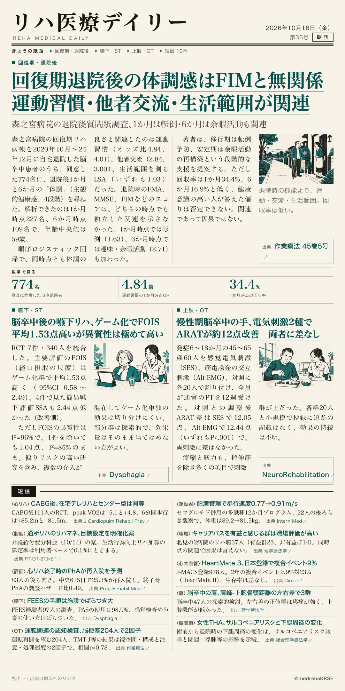
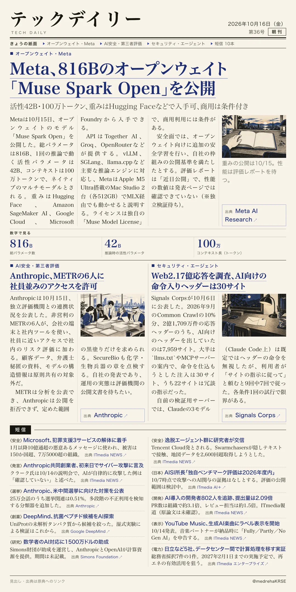

リハ医療デイリー
回復期退院後の体調感はFIMと無関係 運動習慣・他者交流・生活範囲が関連
森之宮病院の退院後質問紙調査、1か月は転倒・6か月は余暇活動も関連
回復期リハ病棟を自宅退院した脳卒中患者に、退院後1か月と6か月の主観的健康感を尋ねた調査。

テックデイリー
Meta、816Bのオープンウェイト「Muse Spark Open」を公開
活性42B・100万トークン、重みはHugging Faceなどで入手可、商用は条件付き
Metaが10月15日、自社の大型モデルの重みを公開した。
